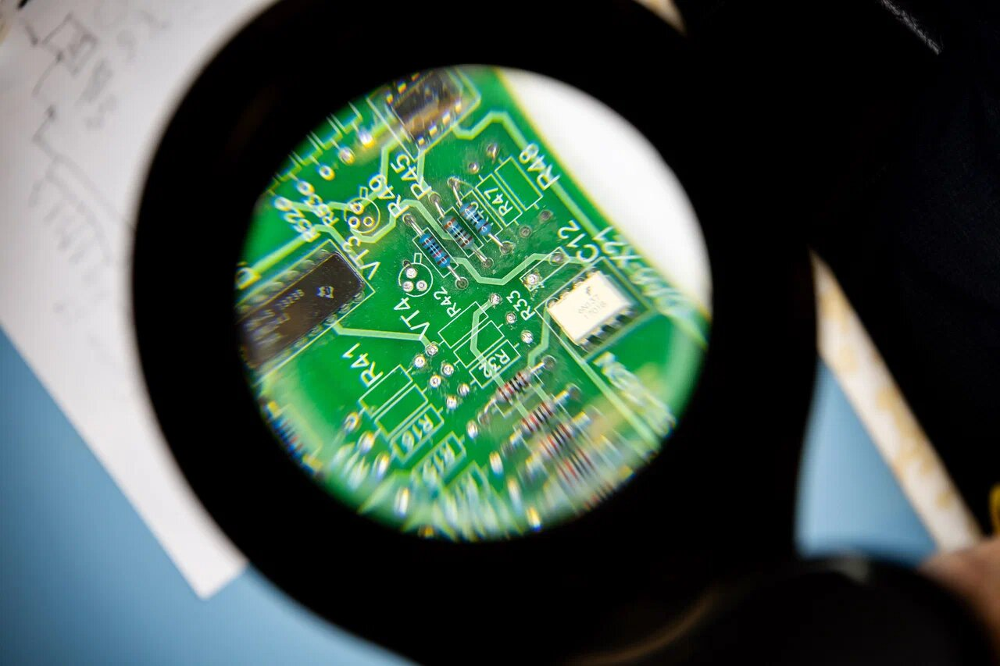
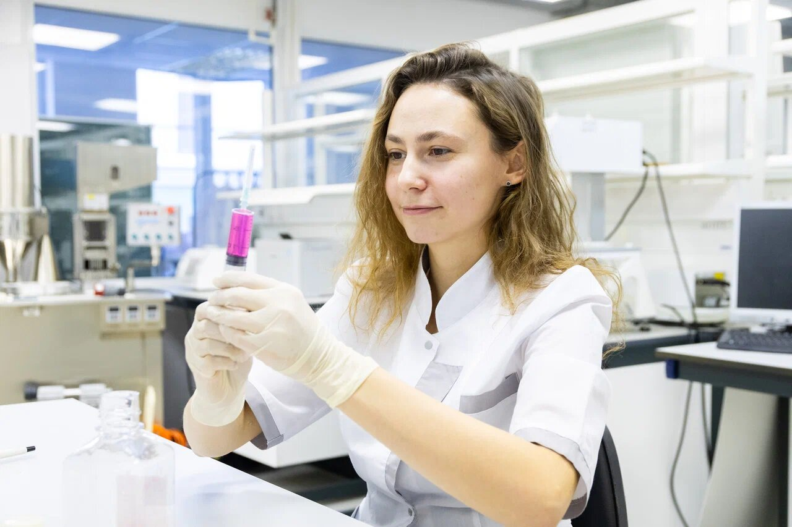
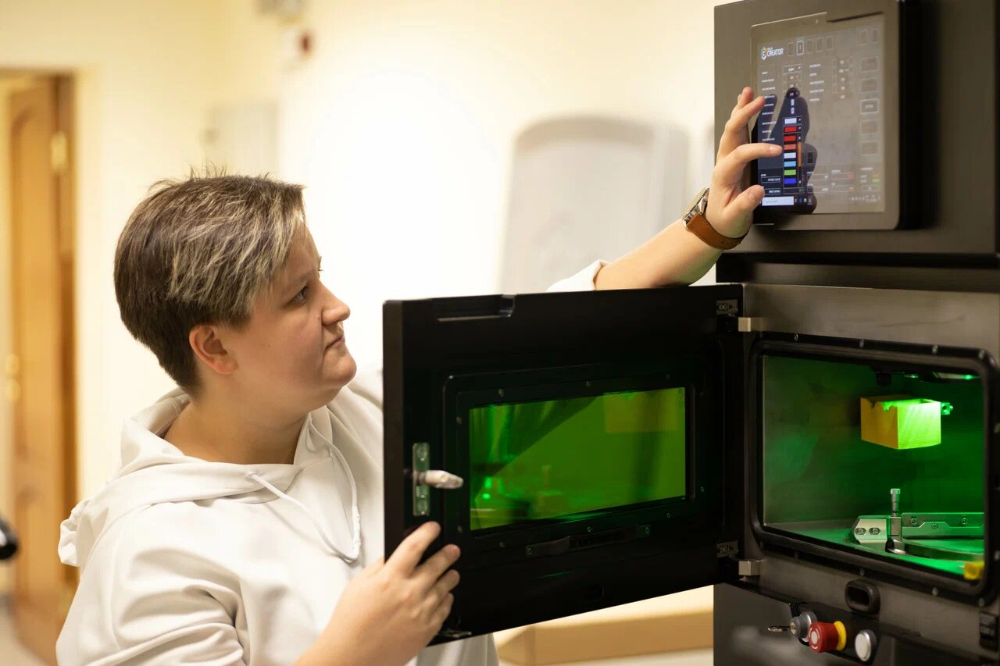
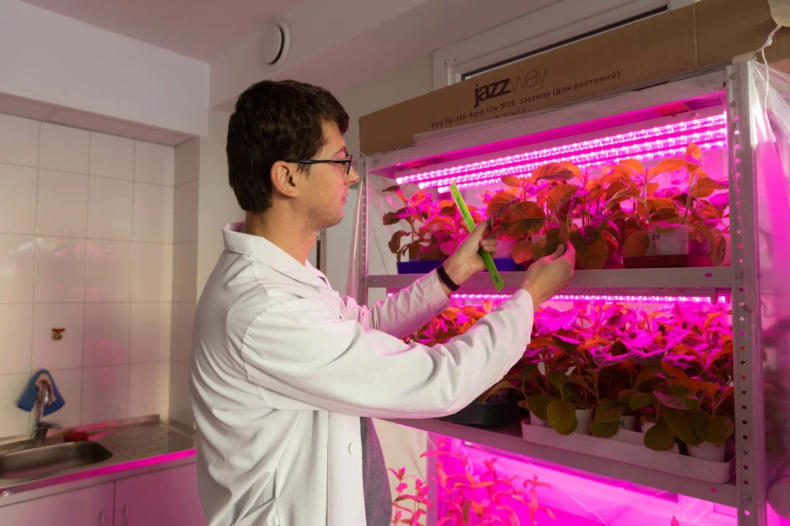
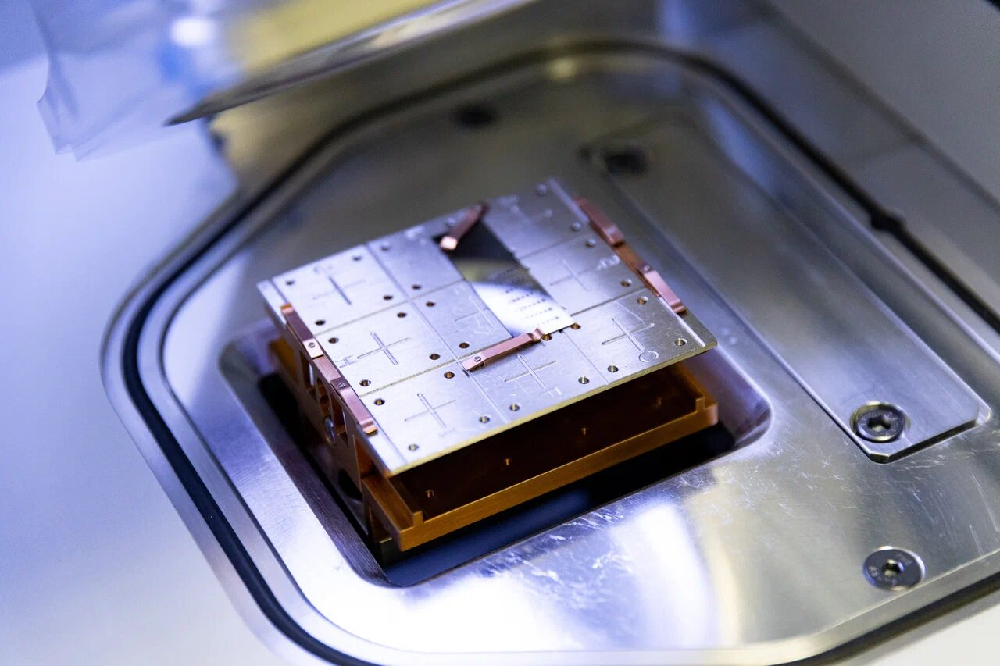

Наука
Лаборатории, научные проекты и гранты. Здесь можно заказать исследование, опубликовать статью и пройти путь от студенческого проекта до защиты диссертации.
Чаще всего
- научно-исследовательских лабораторий
- 164
- прорывных научных проектов
- 6
- научных журналов, 12 из них в международных базах
- 23
- докторов наук
- 561
- кандидатов наук
- 1 864
Четыре направления
Исследования идут на стыке наук. Лаборатории объединены вокруг четырёх прорывных направлений университета.

Информационные технологии и человек в информационном обществе
Лаборатория многомасштабного математического моделирования «Мультимод», лаборатория международной и региональной экономики

Энергетика, ресурсосбережение, рациональное природопользование
Лаборатория физики климата и окружающей среды

Гибкие технологии и новые материалы
НАНОФЕР, лаборатория магнитной сенсорики, лаборатория перспективных материалов пониженной размерности

Живые системы и здоровье
MIFE-лаборатория мембранного транспорта и биологии стресса, лаборатория молекулярных механизмов и экологии морфогенеза
Прорывные проекты
Шесть мегапроектов университет ведёт вместе с академическими и индустриальными партнёрами России и мира.
- Магнитные материалы для энергетики, электроники и спинтроники
Научный руководительВладимир Васильевич Устинов, академик РАН
- Климато-экологический мониторинг Российской Арктики
Научный руководительЖан Жузель, Франция
- Электрохимическая энергетика: новые материалы и устройства
Научный руководительPanagiotis E. Tsiakaras, Университет Фессалии, Греция
- Протопланетное вещество в космосе, Солнечной системе и на Земле
Научный руководительАндрей Михайлович Соболев, Коуровская астрономическая обсерватория
- Новые функциональные материалы на основе углерода
Научный руководительЭрнст Загидович Курмаев, Институт физики металлов УрО РАН
- Умные энергосети Smart Grid на основе больших данных
Научный руководительАлександр Борисович Куржанский, академик РАН
Путь в науку
От первого студенческого проекта до защиты диссертации. На каждом шаге есть, куда обратиться.
Студенческая наука
Портал молодёжной науки, студенческие конкурсы и олимпиады.
Портал молодёжной наукиМагистратура
Исследовательские программы в институтах и лабораториях университета.
Программы магистратурыАспирантура
Подготовка научно-педагогических кадров, направления и нормативные документы.
Об аспирантуреЗащита диссертации
Диссертационные советы, порядок и сроки защиты.
Диссертационные советы
Исследования для предприятий
Центр коллективного пользования объединяет лаборатории, их приборы и учёных. Предприятие заказывает у них измерения и исследования.
- Не нужно покупать и содержать дорогое оборудование
- Измерения по аттестованным методикам
- Исследования на территории университета для задач предприятия

Публикации
Сотрудникам Программа «Научная публикация — это реально!» Выплаты за статьи в зарубежных журналахБлижайшее
Все события- Премия губернатора для молодых учёныхПриём заявок
- Российские регионы в фокусе переменМеждународная конференция